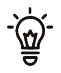

1Switch off.
Switch the battery pack off (the switch is on its back).
2Move the wires.
Move the 9 wires to the new board one at a time: pull a wire off the Pico, check which pin it
was on, push it onto the matching new pin. Your wire colours may not match the drawing (only red
for + and black for − are usual), so go by the pins: if unsure, trace the wire back to the name printed
on the eye board (DIN, CLK, CS). Keep the Pico: it still works.
3Switch on.
The eyes start their show straight away and, the first time, scroll the WiFi name, password and
address for step 4. It’s alive!
4Introduce it to your WiFi (first time only).
On a phone, join the WiFi
called Spooky Pumpkincalled
Jack's Pumpkin,
password spookyeyes. If the phone says “no internet”, choose Use without internet or
Stay connected. A page pops up (if not within 20 seconds, open 192.168.4.1):
give your pumpkin a name (e.g. Jack's Pumpkin), pick your home
WiFi, enter its password and tap Save. It only sees 2.4 GHz WiFi: pick your
main network, not a guest one (if there are two, the one ending 2.4G).
5Play.
It restarts, joins your home WiFi and scrolls its address,
made from its name, e.g. http://jacks-pumpkin.local
or numbers like 192.168.1.23. Open it on a phone or computer on your WiFi
for the button page: dozens of effects, a talking pumpkin (your phone speaks), your own words on the
eyes, a page to make your own show, and Settings. If the name won’t open (common on Android), use the
numbers. Eyes say Join WiFi again? Probably a wrong password: join the pumpkin’s WiFi and try
again (the page says what went wrong).

On the doorstep? If it loses your home WiFi for 3 minutes, it makes its
own: join it and open 192.168.4.1. It goes back to your WiFi by itself.
BOOT button: a quick press repeats the address, or the setup message
(which stops after 15 minutes). Hold it for 5 seconds to forget your home WiFi.
Hungry brain: fit fresh AA batteries, or plug a USB power bank into the
USB-C socket (battery pack off).